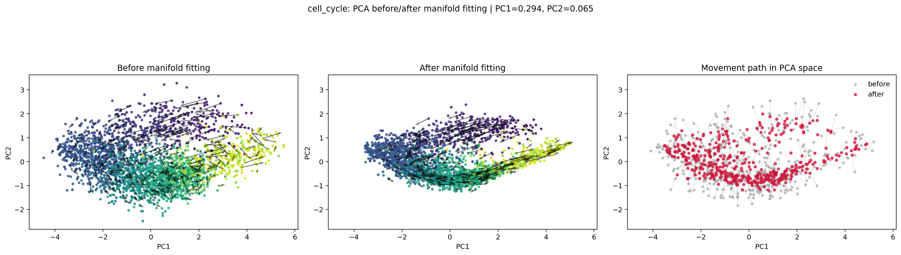
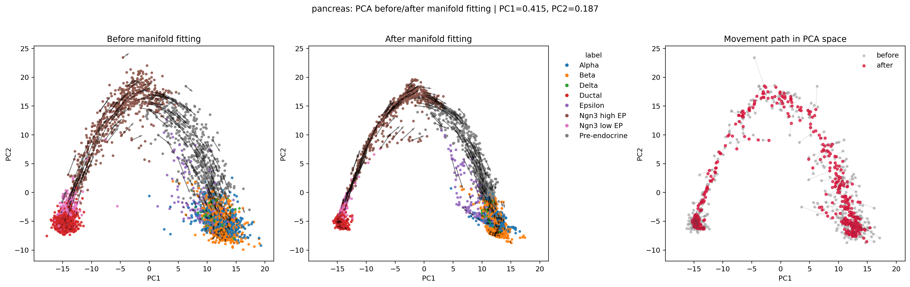
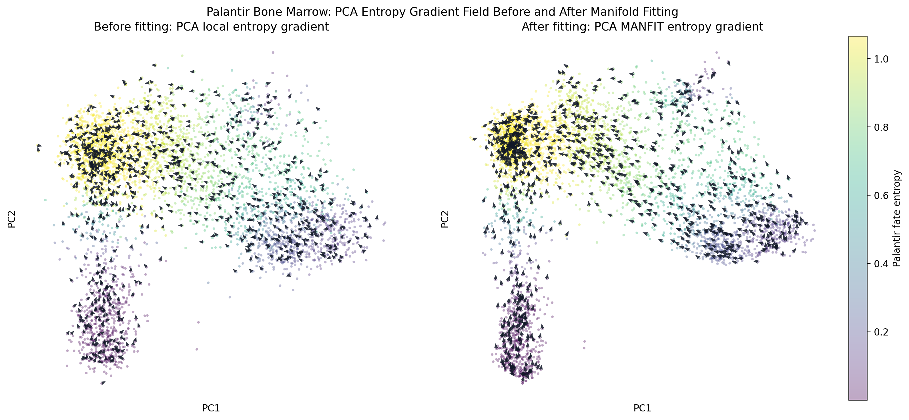
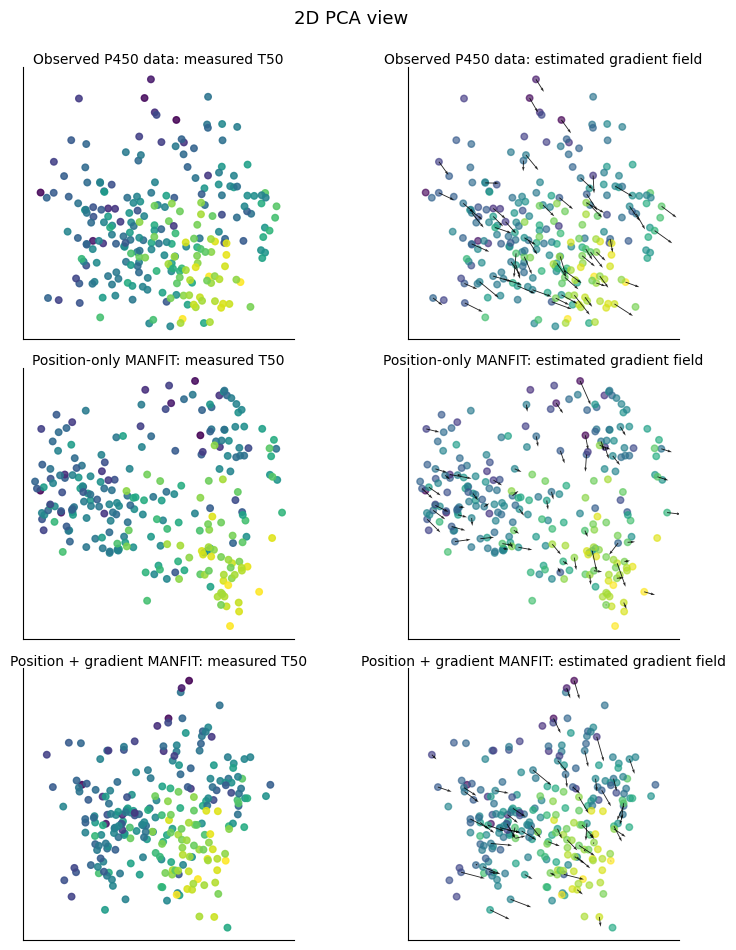

MANFIT result synthesis
PCA Before and After Manifold Fitting Across Four Datasets
Technical Summary
This report gathers the four dataset examples we have tried so far and puts them into one PCA-based comparison surface. Each section shows the observed PCA view before fitting and the corresponding position after manifold fitting, using the existing outputs from the project notebooks and scripts.
Cell Cycle: Fitting Compresses a Noisy Velocity Cloud Into a Clearer Arc
The cell-cycle example is the cleanest quick sanity check for RNA velocity behavior. The before panel shows a broad PCA cloud with noisy local arrows; the after panel keeps the same coarse ordering but pulls points into a smoother low-dimensional trajectory.

outputs/rna_velocity/cell_cycle_pca_before_after_path.png.
Color follows the existing cell-cycle position or pseudotime-like ordering from the notebook output.
Interpretation. The after panel preserves the main cycle ordering while reducing off-manifold spread, which is the intended behavior for this fitting pass.
Pancreas: The Differentiation Arc Becomes More Coherent After Fitting
The pancreas example is more heterogeneous than cell cycle because the PCA view mixes several annotated endocrine and precursor states. After fitting, the dominant arch is more sharply organized, especially through the central Ngn3 and pre-endocrine region.

outputs/rna_velocity/pancreas_pca_before_after_path.png.
Labels are the existing notebook cell-type annotations.
Interpretation. The fitted result reads as a smoother branching trajectory, though the label mixing means this should stay a visual diagnostic rather than a quantitative validation by itself.
Palantir: Entropy Gradients Can Be Read Directly on PCA Points
The Palantir example uses PCA coordinates only, with quiver arrows anchored on sampled real cells rather than grid points. The before panel is a local finite-difference entropy gradient; the after panel shows the MANFIT-projected entropy gradient on the fitted PCA positions.

outputs/real_data_palantir/palantir_entropy_gradient_pca_before_after_manifold_fit.png.
Interpretation. This is the most useful Palantir diagnostic so far: it stays raw in PCA space while still showing how the fitted geometry changes the gradient directions.
Fitness Landscape: PCA Gives a Qualitative Check of the Potential Gradient
The protein fitness landscape example uses P450 measured T50 as the scalar response. The PCA view compares the observed latent positions, position-only MANFIT, and position-plus-gradient MANFIT, with estimated gradient fields overlaid where available.

outputs/manual-potential-gradient/html-report/assets/protein_pca_results.png.
Interpretation. This is a compact qualitative check that adding gradient information changes the fitted latent geometry, but it is not yet a polished benchmark metric.
Scope, Data, and Definitions
“Before” means the original PCA coordinates or observed latent PCA view used by the relevant notebook or script. “After” means the position after the current manifold fitting procedure for that example. These figures are visual diagnostics, not a single common quantitative benchmark.
Methodology
The report reuses already generated PNG artifacts rather than rerunning all notebooks. For cell cycle and pancreas, the source figures are the existing RNA velocity PCA before/after outputs. For Palantir, the source figure comes from the PCA-only entropy-gradient script. For the fitness landscape, the source figure comes from the previous manual potential-gradient HTML report assets.
Selected visual contract: 1. Use PCA coordinates for every dataset. 2. Show before and after manifold fitting side by side. 3. Keep vector or gradient overlays only where the source figure already supports them.
Limitations and Uncertainty
- The four examples do not share one metric, noise model, or validation target yet.
- PCA views are useful for inspection, but they can hide changes in higher dimensions.
- Palantir and protein fitness are scalar-potential examples, while cell cycle and pancreas are velocity-field examples.
- The fitness landscape figure is inherited from an earlier report asset, so it should be revisited if we want a stricter apples-to-apples comparison.
Recommended Next Steps
Treat this report as the comparison board for polishing the algorithm. The next useful step is to add one small metrics table beside these visuals: position movement size, velocity or gradient alignment change, and a neighborhood preservation statistic for each dataset.
Further Questions
- Should Palantir and fitness landscape get the exact same scalar-potential fitting script before we compare them?
- Do we want each dataset to report the same three scalar diagnostics in addition to the PCA figure?
- Should the website expose these real-data examples next to the synthetic simulations?